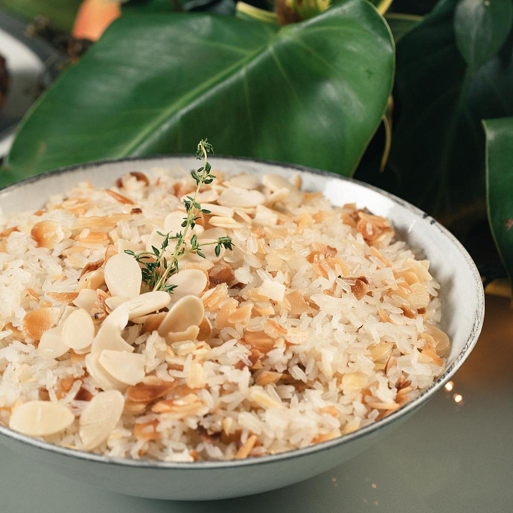

Arroz com Amêndoas (Líbano / Grécia)
Ingredientes
Base
- 1 xícara (chá) de arroz basmati (ou comum)
- 2 xícaras (chá) de água ou caldo de frango
- 1 colher (sopa) de manteiga ou azeite
- 1/2 cebola picada
- Sal a gosto
Aromas e Finalização
- 1/2 xícara de amêndoas laminadas
- 1 punhado de uvas-passas (opcional)
- 1/2 colher (chá) de canela (opcional)
- 1/2 colher (chá) de cúrcuma ou açafrão da terra (opcional)
- Coentro ou salsa picada para servir
Modo de Preparo
- Torre as amêndoas em uma frigideira seca até ficarem levemente douradas e reserve.
- Derreta a manteiga ou aqueça o azeite e refogue a cebola até ficar transparente.
- Adicione o arroz e misture bem para envolver nos temperos.
- Acrescente a água ou caldo, coloque sal e, se desejar, adicione canela, cúrcuma e uvas-passas.
- Cozinhe em fogo baixo, tampado, até a água secar e o arroz ficar macio.
- Solte o arroz com um garfo, misture parte das amêndoas e finalize com o restante por cima, junto com
coentro ou salsa.
 Fácil
Fácil